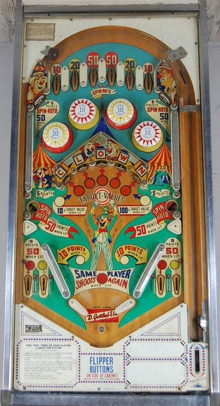

The two middle top lanes, the top left and right standup targets, and the left and right saucers spin the Roto. The Roto determines the exact value of each of the five center standup targets, which correspond to letters in Clown. Targets can have a value of 2, 3, 4, 5, or Star; the Star scores only 1 point, but hitting a target lit for Star at any time awards an extra ball. Hitting a center standup target lights the letter in Clown on the plastic above that target. Lighting all of the letters in Clown once qualifies 10x target value, which lasts until Clown is completed again. Completing Clown when 10x is lit increases the multiplier to 100x, but the 100x multiplier only lasts for one shot and resets back to 1x when any center target is hit, so use it wisely. The multiplier and any lit Clown letters are preserved from ball to ball, player to player, and game to game, making it possible to steal scoring chances from other players.
The top lanes always score 10-20-50-50-20-10 from left to right.
10-point switch hits around the game determine whether or not the following features are lit:
In each of these listed pairs, the game will have one of the two features lit or neither feature lit, but it will never have both features be lit at the same time.
The slingshots are thin rail slingshots, allowing room for 2 out lanes on each side. The left out lane in each pair can be lit red, and the right can be lit yellow. They are lit when the yellow or red pop bumpers are lit respectively, and score 5 points or 50 when lit. The flippers are somewhat far apart, but with a rather large peg between/below them.
Maximum 1 extra ball per ball in play. There is no way to set an extra ball to score points instead. There is no playfield Special or end of ball bonus. Tilt ends the ball in play only.
The below picture of Happy Clown's playfield was taken from Pinside, where it is listed as image #1092857.
